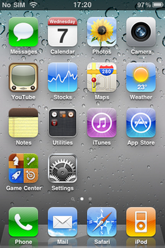

iOS 4
O iOS 4 é o quarto maior lançamento do sistema operacional móvel iOS desenvolvido pela Apple Inc. , sendo o sucessor do iPhone OS 3 . Foi anunciado na Worldwide Developers Conference da empresa em 7 de junho de 2010 e foi lançado em 21 de junho de 2010. O iOS 4 é a primeira versão iOS sob o rebranding "iOS", cancelando a convenção de nomenclatura "iPhone OS" de versões anteriores . Foi sucedido pelo iOS 5 em 12 de outubro de 2011.
O iOS 4 introduziu pastas na tela inicial, aumentando significativamente o número de aplicativos que podem ser exibidos. Suporte para papéis de parede personalizados também foi adicionado, embora limitado a dispositivos mais recentes devido aos requisitos de desempenho de animação. O sistema operacional também adicionou um recurso multitarefa, permitindo que aplicativos que lidam com chamadas pela Internet , localização e reprodução de áudio funcionem em segundo plano, enquanto uma tecnologia semelhante, mas mais restrita, "Fast App Switching" permite que qualquer aplicativo fique inativo em segundo plano enquanto os usuários alternam para outros aplicativos. O iOS 4 também adicionou um recurso de verificação ortográfica em todo o sistema, habilitou o iBooks no iPhone, unificou a caixa de entrada do Mail para combinar conteúdo de diferentes provedores de e-mail e introduziu o Game Center para jogos sociais e o FaceTime para videochamadas .
A atualização do iOS 4 introduziu problemas de desempenho e bateria em dispositivos iPhone 3G , com a Apple investigando o assunto e prometendo atualizações futuras. No entanto, a empresa tornou-se alvo de uma ação judicial de um cliente insatisfeito em relação aos problemas. Na mesma época, o lançamento do iPhone 4 e seus problemas subsequentes de antena fizeram com que a Apple se concentrasse em tentar, sem sucesso, corrigir os problemas com as atualizações de software.
Desenvolvedor Apple Inc.
Modelo de origem Fechado , com componentes de código aberto
lançamento inicial 21 de junho de 2010
lançamento
- iPhone 3G, iPod Touch (2ª geração)
4.2.1 (22 de novembro de 2010)
- iPhone 4 (CDMA)
4.2.10 (25 de julho de 2011)
- iPhone 3GS, iPhone 4 (GSM), iPod Touch (3ª geração), iPod Touch (4ª geração), iPad (1ª geração), iPad 2
Tipo de kernel Híbrido ( XNU ) Licença EULA proprietário, exceto para componentes de código aberto
Antecessor iOS 3
Sucessor iOS 5
Apps
- iBooks
- Centro de jogos
- Facetime
Introdução e lançamento inicial
O iOS 4 foi introduzido no discurso de abertura da Conferência Mundial de Desenvolvedores da Apple em 7 de junho de 2010. Notavelmente, foi o primeiro lançamento do iOS a ser chamado simplesmente de "iOS", tendo abandonado o padrão de nomenclatura "iPhone OS" das versões anteriores.
O iOS 4 foi lançado oficialmente em 21 de junho de 2010.
Atualizações
4.0.1
O iOS 4.0.1 foi lançado em 15 de julho de 2010, como a primeira atualização para o iOS 4. A atualização mudou o método de cálculo da força do sinal da operadora para maior precisão.
4.0.2
O iOS 4.0.2 foi lançado em 11 de agosto de 2010, com uma correção para uma exploração aproveitando as vulnerabilidades do formato de arquivo PDF .
4.1
O iOS 4.1 foi lançado em 8 de setembro de 2010. A atualização incluiu a tecnologia HDR ( High Dynamic Range ) para melhorar a qualidade das fotos capturadas com o iPhone 4 , adicionar a rede de jogos sociais Game Center e a capacidade de fazer upload de vídeos de alta definição capturados no iPhone 4 para o YouTube e MobileMe . Ele também apresentava correções de bugs e melhorias de desempenho.
4.2.1
O iOS 4.2.1 foi lançado em 22 de novembro de 2010. Foi a primeira versão a trazer todos os principais recursos do iOS 4 introduzidos no iPhone para o iPad. Embora o iOS 4.2 tenha sido liberado para desenvolvedores para fins de teste, os bugs foram descobertos, e foi substituído por 4.2.1 para a liberação do consumidor. É também a última versão do iOS a rodar no iPhone 3G e iPod Touch 2nd Generation devido a limitações de hardware e problemas de desempenho.
4.2.5
O iOS 4.2.5 foi anunciado em 11 de janeiro de 2011, adicionando suporte a hotspot Wi-Fi exclusivo para a versão CDMA do iPhone 4 .
4.3
O iOS 4.3 foi lançado em 4 de março de 2011, adicionando suporte a hotspots Wi-Fi pessoais, compartilhamento doméstico do iTunes , melhorias no AirPlay e outras pequenas melhorias. iPad 1 Não é possível executar o iOS 4.3 devido a restrições de hardware
4.3.1
O iOS 4.3.1 foi lançado em 25 de março de 2011, com uma correção para falhas na tela do iPod Touch , juntamente com melhorias de estabilidade para conectividade celular em modelos de iPhone.
4.3.2
O iOS 4.3.2 foi lançado em 14 de abril de 2011, com correções para chamadas congeladas no FaceTime e problemas de conectividade em modelos de celular do iPad.
4.3.3
O iOS 4.3.3 foi lançado em 4 de maio de 2011 para corrigir erros de localização.
4.3.4
O iOS 4.3.4 foi lançado em 15 de julho de 2011, corrigindo vulnerabilidades de segurança.
4.3.5
O iOS 4.3.5 foi lançado em 25 de julho de 2011, com uma atualização de segurança para corrigir a validação do certificado.
Recursos do sistema
Tela inicial
O iOS 4 aumentou o número máximo de aplicativos de tela inicial de 180 para 2.160 devido à adição de pastas. Essas pastas seriam automaticamente nomeadas com base na respectiva categoria de App Store . A capacidade de adicionar papéis de parede personalizados para a tela inicial também foi adicionado, embora o recurso foi notavelmente ausente do iPhone 3G e da segunda geração do iPod Touch devido ao fraco desempenho de animações de ícones.
Multitarefa
O iOS 4 introduziu a multitarefa. O recurso permitia que os usuários alternassem entre aplicativos instantaneamente clicando duas vezes no botão de início. Foi implementado de tal forma que não causou consumo excessivo de bateria. A multitarefa limitava-se a aplicativos que lidavam com chamadas pela Internet , localização e reprodução de áudio, enquanto uma tecnologia semelhante "Fast App Switching" significava que os usuários podiam deixar um aplicativo e inserir outro, com o aplicativo original em segundo plano até o retorno do usuário.
Correção ortográfica
O iOS 4 introduziu um recurso de verificação ortográfica que sublinhava as palavras incorretas em vermelho. Tocar na palavra forneceria um pop-up com uma substituição recomendada.
Câmera
O aplicativo Câmera pode tirar fotos com zoom digital de 5 vezes.
Recursos do aplicativo
iBooks
O iOS 4 introduziu o suporte para iPhone e iPod Touch no iBooks , que já estava incluído no iPad. Embora não seja um aplicativo padrão, ele estava disponível na App Store .
Mail
O aplicativo Mail apresentava uma caixa de entrada unificada no iOS 4, permitindo que os usuários vissem mensagens de todas as suas contas de e-mail exibidas juntas em uma única caixa de entrada. Ele também ganhou suporte para aliases de e-mail do MobileMe e várias contas do Exchange para usuários corporativos.
Game Center
O iOS 4.1 adicionou um novo aplicativo chamado Game Center , uma rede de jogos sociais multijogador online, que permite aos usuários convidar amigos para jogar e comparar suas pontuações em um placar. Não estava disponível no iPhone 3G .
FaceTime
O iOS 4 introduziu o FaceTime , um aplicativo de videotelefonia que usa a câmera do dispositivo para permitir que o usuário faça chamadas de vídeo com outros usuários do FaceTime.
Safari
O navegador da web móvel Safari no iOS 4 adicionou o Bing como uma opção de pesquisa, além do Google e do Yahoo!.
No iOS 4.2, palavras ou frases específicas em uma página podem ser pesquisadas.
Problemas
Usuários do iPhone 3G reportaram problemas de desempenho e bateria após a atualização para o iOS 4. A Apple iniciou uma investigação do assunto em julho de 2010. Em novembro, a Apple foi processada pelos problemas, com um cliente insatisfeito alegando "violação da Lei de Conscientização do Consumidor". , práticas comerciais desleais e publicidade falsa e enganosa ", com alegações adicionais de que a Apple sabia que seu software causaria problemas em modelos mais antigos. A Apple não respondeu às alegações, mas escreveu em resposta a outro cliente insatisfeito em agosto que as atualizações estavam "em breve".
Em todas as versões do iOS 4, o despertador no aplicativo de relógio apresentava um problema no horário de verão quando saía uma hora mais cedo ou mais tarde.
Após o seu lançamento, alguns usuários do iPhone 4 relataram ter problemas técnicos com as antenas do telefone. A Apple tentou corrigir o problema com o iOS 4.0.1, mas falhou em fazê-lo.